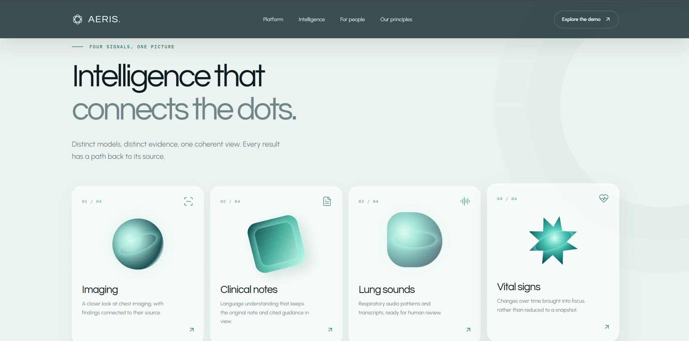

Clinical AI · research prototype · in progress
AERIS
A research prototype that helps a hospital care team handle patients arriving with breathing problems. It gathers the evidence (chest X-ray, lung sounds, clinical notes, vital signs, symptoms) in one place, adds AI second opinions on each, and leaves every decision to a clinician.
- Python
- Next.js
- Spring Boot
The parts
Three layers, one rule
Clinician and patient screens. The clinician reviews every AI result and accepts or overrides it.
Logins, permissions, records, the audit trail and the job queue. The original model output is never rewritten.
One model per kind of evidence. Each returns a result with its confidence and quality warnings.

The clinician view
Flag the sound, leave the diagnosis
Recording, left lower lobe18.6 s · 6 breaths
Normal 0.91
Crackles 0.74
Wheezes 0.68
Normal 0.88
Both 0.52
Too quiet
Model noteSound, not a diagnosis
- Breath 6 below amplitude gatere-record
- Original output kept on overrideaudit
Interface sketch with sample data · the audio model is still in training
The AI modules
One question each
| Module | Question it answers | Status |
|---|---|---|
| M3 Heart-disease risk | From routine data (age, blood pressure, cholesterol), what is this person’s risk? | Done through the final test: AUROC 0.89 on locked data. Next: explanations and a fairness check |
| Respiratory audio | In this breath, are there crackles, wheezes, both, or nothing abnormal? | Training now (phase 10) |
| M2 NLP / RAG assistant | Pull key facts from notes and answer with citations to GOLD, GINA, pneumonia and sepsis guidelines | Planned; platform storage ready |
| M1 Chest X-ray vision | Which findings are on this X-ray, with a heatmap of where it looked? | Planned; dataset access needed |
| M4 ICU risk | Will this patient need the ICU within 24 h, or be readmitted within 30 days? | Planned; MIMIC-IV needs credentials |
| M5 Serving + fusion | Run all models as services and combine them, showing gaps and disagreement | Last, once two modules are validated |
The audio model
A wheeze is a sound, not a disease
How it works
- A clinician records the chest with a digital stethoscope.
- The backend checks permissions and queues a job.
- The recording is cut into breaths; each is labelled normal, crackles, wheezes or both, with confidence and quality warnings (too quiet, bad file).
- The clinician listens and accepts or overrides; the original output is kept.
- Later, fusion combines it with the X-ray, notes and vitals.
Where it stands
- Phases 1–8, data checks and simple models: best score about 0.50, no better than always saying “normal”.
- Phase 9, borrowing a children’s lung-sound dataset: made things worse (about 0.14). Documented and closed.
- Phase 10, now: the Audio Spectrogram Transformer, pretrained on 2 million YouTube sounds. Wiring check 0.53; full training running.
- Target 0.58–0.62, what honest published work reaches on this dataset.
AERIS is a research prototype. No model diagnoses anyone, and the interface shown is a sketch with sample data.